Playable slice
Poland Is Not Yet Lost!
First of January, 1936. Real interwar borders, 2039 technology. Can you defeat the USSR and Germany?
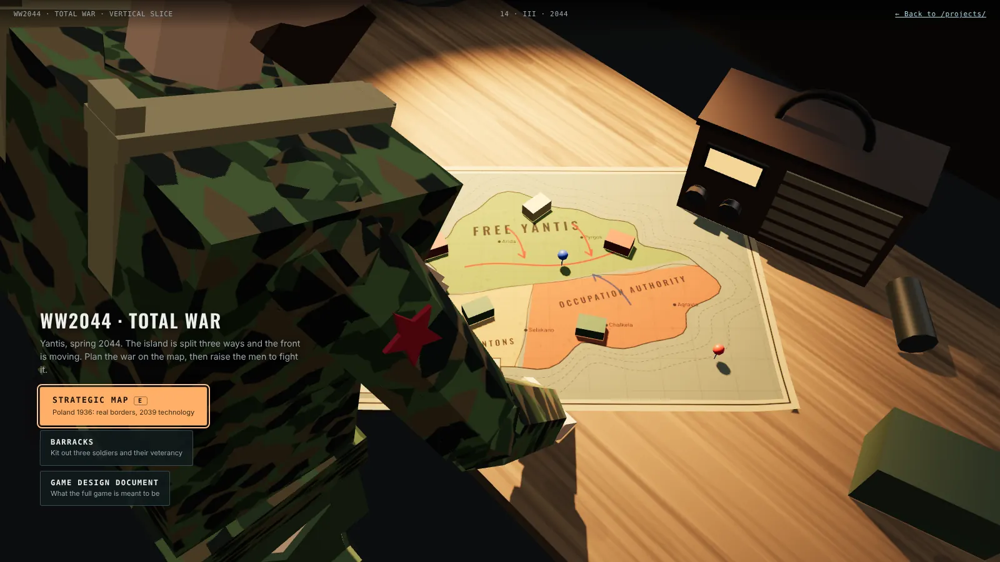
Shape (alt)history. Run a nation on a painted world map, then take command on the battlefield when the war comes to you. Pick a scenario and a timeline, and make history go your way.
A turn-by-turn world map where you run a nation, and real-time battles where you win or lose it.
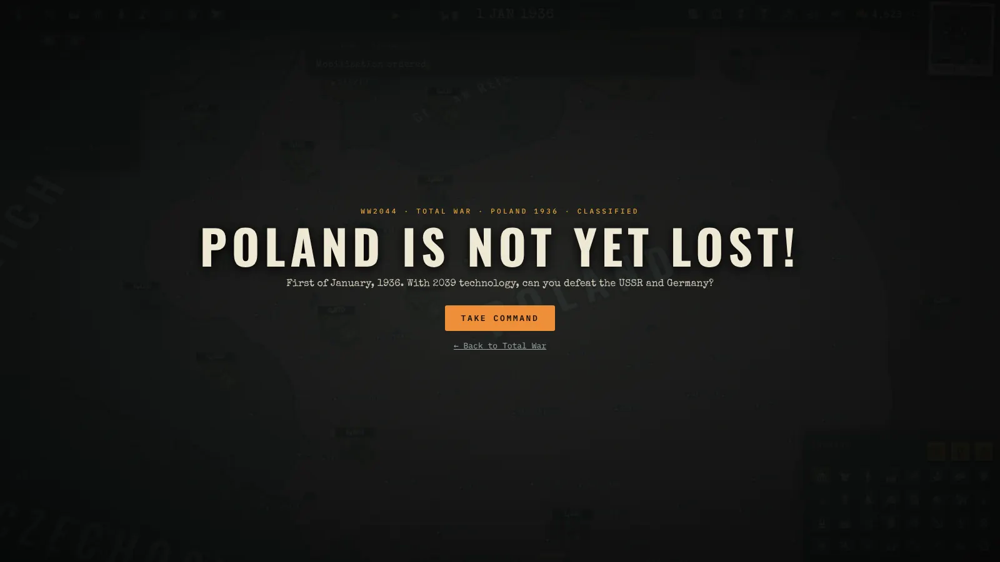
Every scenario starts from a moment you'd recognise, then hands you the pen. Drive the Ottoman Empire to its height in a Cold War that never ended, reunify Germany in a near sci-fi 2044, or hold Poland against two empires with tomorrow's weapons.
Every war declared on the map is decided on a battlefield you command: build a forward base, hold the supply lines, upgrade your squads and take the objective. Win and the map changes. Lose and the front moves against you.
Two games stitched into one campaign, each readable at a glance.
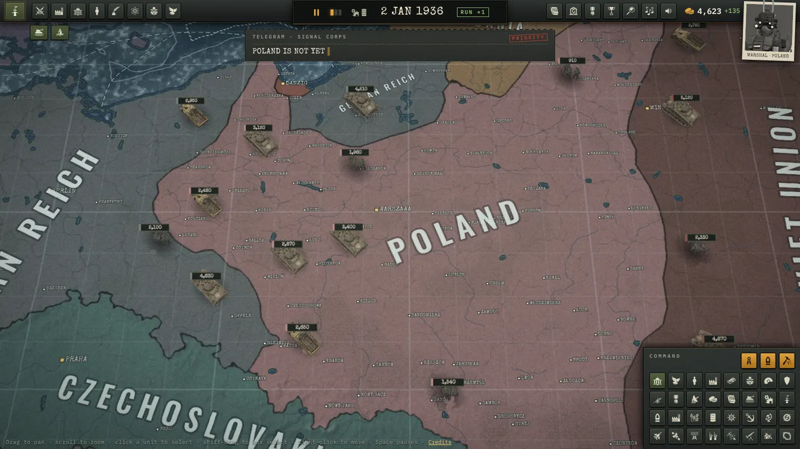
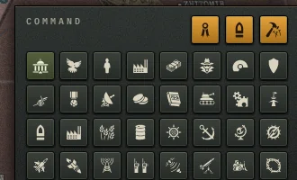
A political map of real 1936 frontiers, lettered by hand and lit like a war-room projector table. Time runs by the day; pause whenever you need to think.
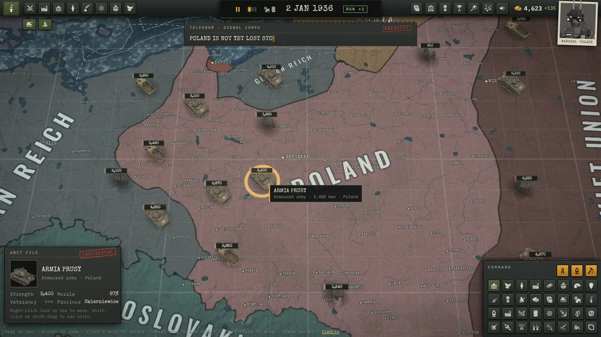
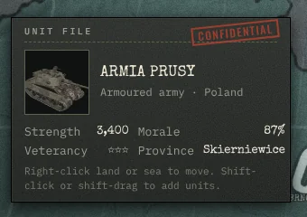
Select an army and its file slides open: strength, morale, veterancy and the province it holds. Drag to pan, scroll to zoom, box-select a whole front and right-click to march.
Behind every marker sits a real roster of squads and vehicles. When it meets the enemy, you choose: fight the battle yourself, or let the numbers decide.
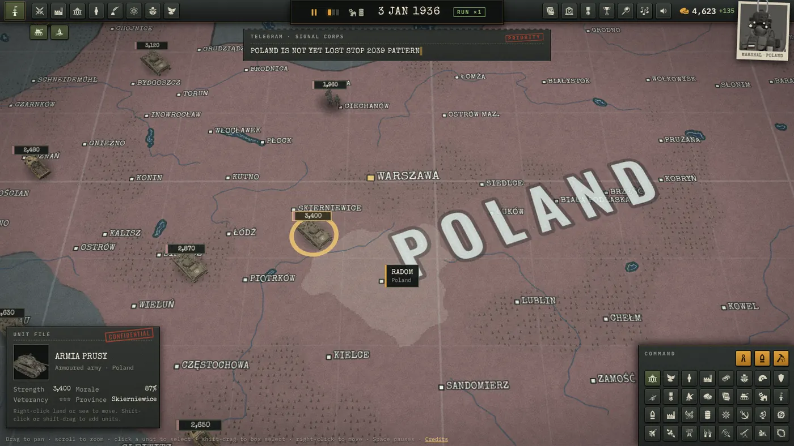
Zoom in and the map fills with towns, rivers and province lines; zoom out and it falls back to nations and fronts. A province, an army or a city shows its state without opening a single panel.
Chrome stays at the edges, so the map is always the star.
Battles aren't side missions. Their result writes straight back to the campaign.
Collect income, set research, build in provinces, move armies, make deals.
An army crosses into hostile ground. Fight it yourself or auto-resolve.
Real time with pause: build a base, hold sectors, upgrade squads, take the objective.
Survivors keep their veterancy, losses come off the roster, the province changes hands.
A handful of unit types per side, each with a clear path to get better.
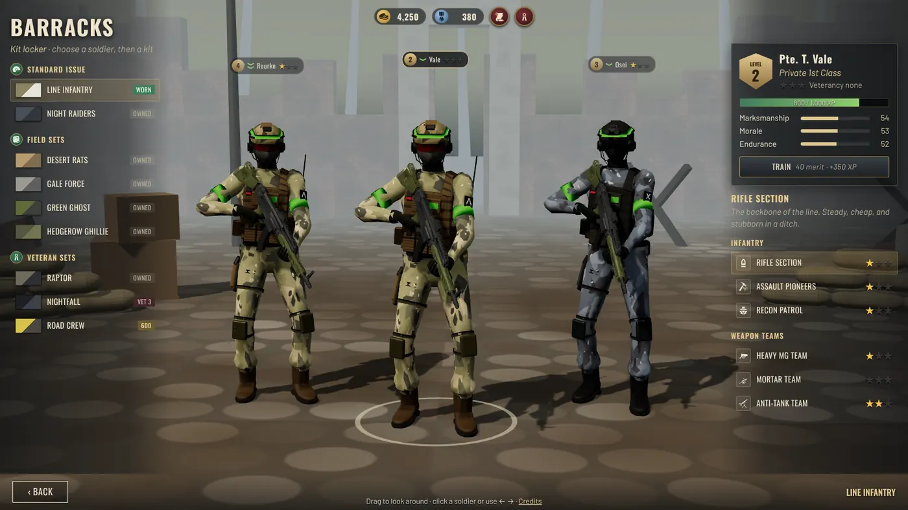
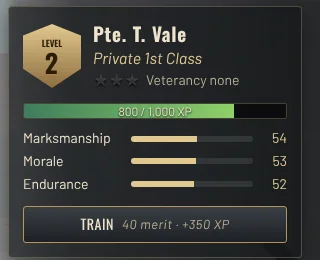
Between battles your section stands in the square, large and in 3D. Pick a soldier and you see who he is: his level, his veterancy and how good a shot he has become.
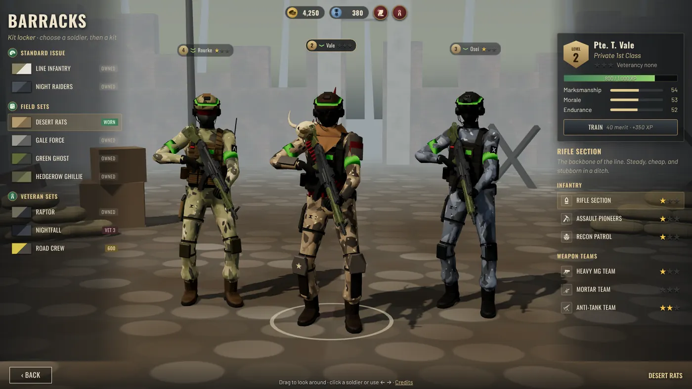
Standard issue, field sets for desert, hedgerow and winter, and veteran sets you only earn. Kit is about looks and loadout: swap rifles for assault rifles, add a rocket launcher, bring a light machine gun.
Research on the campaign map opens up the rest: body armour, smoke, reactive armour for the half-tracks.
Classic base building and resource management, tuned for battles of ten to twenty minutes.
A steady trickle from your HQ, more for every sector you hold. Spent on squads and reinforcements.
From depots on captured supply points. Spent on buildings, weapons and upgrades.
Scarce and fought over. Spent on vehicles, armour and the next tier.
A resource point only pays while a chain of sectors links it back to your HQ. Cut the chain, starve the enemy.
Build an HQ, barracks, motor pool and depots; dig in with sandbags, wire and machine-gun nests. Destroy the enemy HQ, or hold more victory points when the clock runs out. The battle layer is the next milestone, so there's no screenshot yet.
A scenario is a start date, a region, a few playable nations and a deck of events. The timeline sets the technology and the tone.
First of January, 1936. Real interwar borders, 2039 technology. Can you defeat the USSR and Germany?
The Ottoman Empire never fell. Push it back to its height between two superpower blocs, from the Balkans to the Levant.
A divided Germany in 2044. Reunify it by diplomacy or by force, with modernised mid-century hardware and drones overhead.
Scenarios are fiction inspired by history, not reconstructions of it. Nations, leaders and events are invented or alternate versions.
Territory, losses and veterancy from a battle write straight back to the campaign.
No fixed script, only events and pressures. The player makes the history.
A province, a squad or a building shows its state without opening a panel.
A few unit types with clear upgrade paths, not dozens of near-identical ones.
A static browser game, no install and no server, grown by one developer with AI help.

Muted terrain under strong nation colours, hand-lettered names, and a projector glow over the table. Interface panels look like field telegrams and unit files, typed and stamped.
Battles in a top-down three-quarter view with readable silhouettes, built from the WW2044 model gallery.
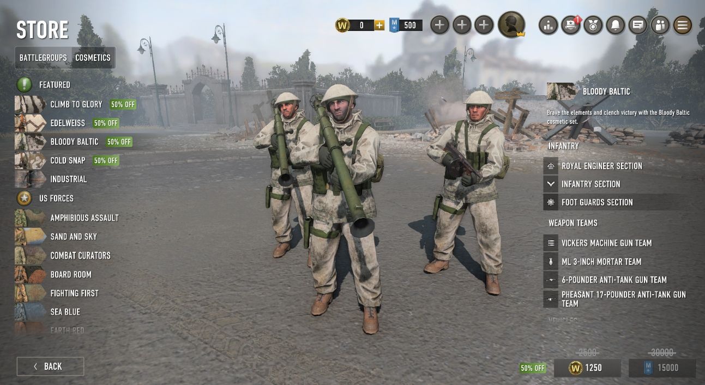
An original score in the spirit of late-nineties RTS soundtracks: heavy synth bass, chugging guitars, military snares and sampled radio chatter. Tense beds on the map, high-energy tracks in battle.
Short, radio-filtered unit responses: "Moving out." "Contact front."
A vertical slice first: one scenario that proves both layers and the link between them.
Scope agreed, main menu, strategic map and barracks prototypes.
One battle map, squads, sectors, resources, one building.
Four buildings, six units, loadouts, veterancy, enemy AI.
Provinces, turns, income, research, events, auto-resolve.
Map to battle and back, music, the full slice online.
Later: OpenGSG, an open alt-history engine where players describe the history they want and an AI assistant writes the mod.
No install, no account. Open the war room and see where the front is today.
Screenshots are renders of the WW2044: Total War vertical slice, 25 November 2026. The two inspiration references are credited under each image; WW2044's own map, art, interface and music are original.
Map: Natural Earth (public domain) with hand-digitised 1936 frontiers; relief from Terrain Tiles on AWS (Mapzen; SRTM, ETOPO1, contains Copernicus EU-DEM data).
Units and soldiers: the WW2044 model gallery by Vincent De Nil; posed soldiers from Escape From Claudov (Riposte: Frontline engine by BenDBSS, MIT; StG 44 from Partisan Project).
Icons: game-icons.net by Lorc, Delapouite and contributors, CC BY 3.0, recoloured. Fonts: Oswald, Barlow, Special Elite (SIL OFL / Apache 2.0). Engine: three.js, MIT.